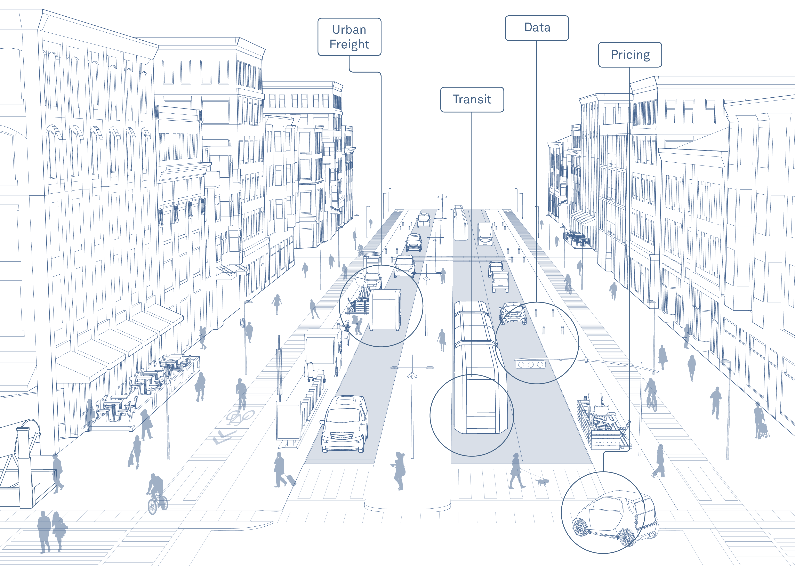

What it is
Nyx is an application to manage, view and share media files remotely from your desktop to any other device with an internet connection. Not only that, but you can share your own desktop files without concerning for security.

Functional Requirements
- Manage files in the server (add, delete, share, organize folders).
- Shared versioned folders.
- Convert text file formats.
- Administrate users.
- Friends: add and share your access.
- Build your applications remotely and test them from afar.

Non-Functional Requirements
- Functionality clear to the user.
- Usability guaranteed to the user, being
- Intuitive.
- Easy to use.
- Friendly.
- Portability between browsers in iOS, Android and Windows 10.
- Security, for your tranquility
- Encrypted file transfer using the latest technologies.
- Guarantee that all users are correctly stored and protected.
- Maintainability for the greatest efficiency
- Good system documentation.
- Easy software modification.
- Error diagnostics.
- Low software complexity.

Justification
En un mundo globalizado donde cada persona quiere tener cada vez más voz, se están monopolizando los medios para compartir ideas. Las nubes no pueden ser el único medio.
Los ambientes universitarios exigen soluciones ágiles para el traspaso de archivos, reproducción de multimedia al instante y sin restricciones (como tener que iniciar sesión).
Siempre la demanda de aplicaciones toma los tiempos de tareas como un ítem fundamental para monitorear la productividad, pero los procesos para compartir archivos locales son lentos.
Actualmenyte, si bien existen soluciones en la nube para gestionar y compartir archivos, pocos permiten visualizarlos y, cuando se puede, son lentos o con menor resolución a la original.
Descarga la PPTX haciendo click.
Tools


SCRUM
Scrum Master: Ayano.
Sprints: 15 days.